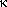

This is a study of how to best render various problematic characters in Loglan 1.
| Name | Old Graphic | New Entity |
|---|---|---|
| Greek... | ||
| Theta | | Θ |
| theta | | θ |
| chi | | χ |
| epsilon | | ε |
| kappa |  | κ |
| Symbol... | ||
| there exists | | ∃ |
| IPA... | ||
| engma | | ŋ |
| s hachek | | š |
| z hachek | | ž |
| open o | | ɔ |
| ah | | a a ɑ ? See L1 sec 2.5, para. 2 |
| schwa | | ə |
| Loglan... | ||
| ma | ||
| mo | ??? |